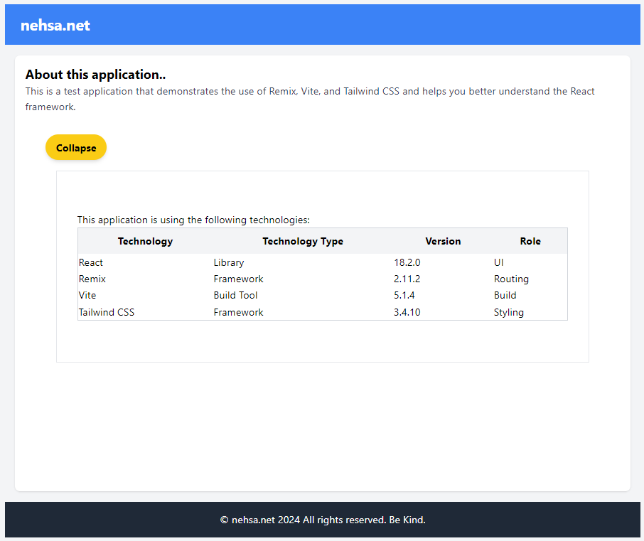
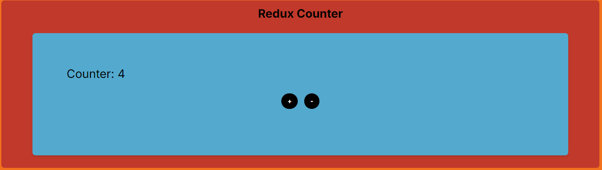
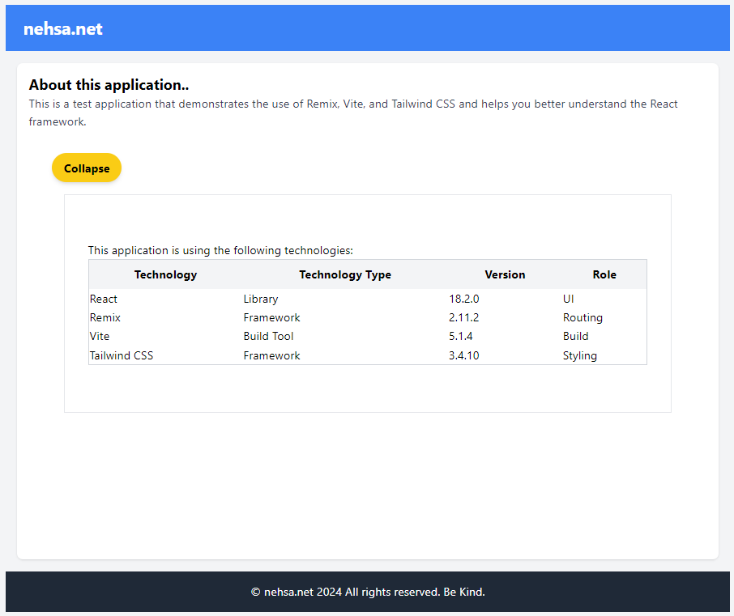
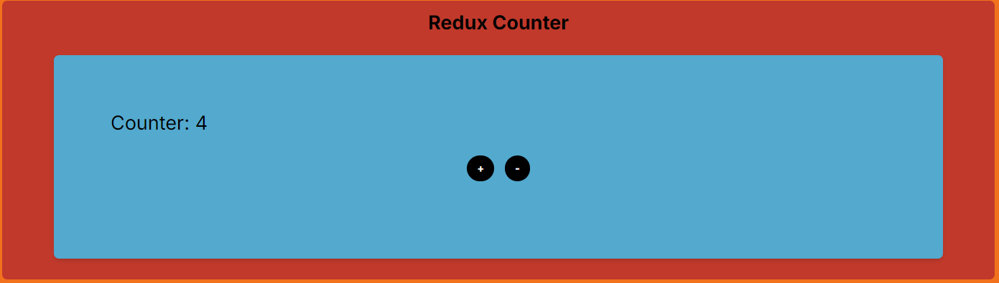

I am a more robust front-end developer using Angular+Material than React. To improve my skills, I
want
to understand React's strengths and some emerging new libraries such as Remix and Vite.
This page is my study of such technologies.
Tackling React is a learning curve. It's not simply adopting new technologies but instead a
completely
new, modern stack with often different patterns and syntax. To break down the various components of
a
React app, let's first break down the terminology:
Framework
A framework within React differs from a libary in that it provides a structure
for the application. Examples of frameworks: Next.js, Gatsby, and Remix
Libary
A libary is similar to a framework but differs in that it provides a set of
functions to use in the application but does not provide a structure for the application. An
example of a React function is the useState function.
Examples of libraries: React, Redux, and React Router
Toolchain
A toolchain the set of tools used to build, compile, and deploy the application. The
toolchain
of the react-vite-app is: Vite, Remix, Docker, and Tailwind CSS. The react-nextjs-app is:
next.js and Redux.
React
Seemining by far the most popular web appliation development language and community.
Remix
A full-stack framework that includes server-side rendering, data fetching, and routing.
Think of
it as scaffolding for a React app.
next.js
Smilar to Remix but significantly more mature and widely used than other frameworks.
Tailwind CSS
Similar to Facebook's Bootstrap, Tailwind CSS is a utility-first CSS framework meaning it
provides low-level utility classes to build custom designs. e.g. <span
class="code">class="flex justify-center"</span>
Redux
A popular libary for state management
SWC
A fast JavaScript/TypeScript compiler
Vite
A fast, modern, and flexible build tool
Server-side rendering (SSR)
SSR is the process of rendering the initial HTML of a web page on the server before sending
it
to the browser.
Static site generation
SSG is the process of generating a static HTML file for each page of a website at build
time.
This is useful for applications that do not require dynamic content.
JSX, TSX
JSX is a syntax extension for JavaScript that allows for the creation of
React elements. TSX is the same as JSX but for TypeScript. Allows for writing HTML in
JavaScript
with awesomeness such as:
const element = <h1>Booyah!</h1>;
My React ProjectsSimple applications leveraging unique features of React and
other
libaries, frameworks, and tools.
My first React site will use Vite, a
modern
build tool, Remix, a framework
that
supports
server-side
rendering and static content generation, and Tailwind
CSS, a CSS
frameword that provides utility classes such as flex, grid, and
spacing.
e.g.
<span
class="code">class="flex justify-center"</span>
Example:

Test application 2 uses next.js,
an
extremely popular framework for React applications, and Redux, a popular library for state
management.
Example:

Installation
The first choice encountered when building a new React app is the toolchain to use.
Toolchain
Pros
Cons
Cost
License
Vendor
Community
Maturity
create-react-app
Fast, easy to use, and well-documented
Less flexible than other options
Free
MIT
Facebook
Very large
High
Next.js
Server-side rendering, static site generation, and API routes
More complex than create-react-app
Free
MIT
Vercel
Large
High
Gatsby
Static site generation, server-side rendering, and a rich plugin ecosystem
More complex than create-react-app
Free
MIT
Open-source
Large
High
Vite
Fast, modern, and flexible
Less mature than create-react-app
Free
MIT
Open-source
Medium
Medium
In addition to toolchains, there are many libraries and frameworks to consider such as
Remix
and SWC. * Remix is a full-stack framework that includes
server-side
rendering, data fetching,
and routing. * SWC is a fast JavaScript/TypeScript compiler allowing for a better
developing environment.
As a first attempt at React, I'm going to use Vite & Remix for the most cutting
edge
experience.
Install Vite: npx create-remix@latest * Preferred over "npm init vite," more
configuration
is streamlined using this method.
This page is my study of such technologies.
Tackling React is a learning curve. It's not simply adopting new technologies but instead a completely new, modern stack with often different patterns and syntax. To break down the various components of a React app, let's first break down the terminology:
Examples of libraries: React, Redux, and React Router


In addition to toolchains, there are many libraries and frameworks to consider such as Remix and SWC.
* Remix is a full-stack framework that includes server-side rendering, data fetching, and routing.
* SWC is a fast JavaScript/TypeScript compiler allowing for a better developing environment.
* Preferred over "npm init vite," more configuration is streamlined using this method.
Important Files and Directories